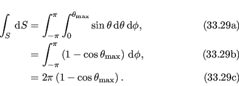
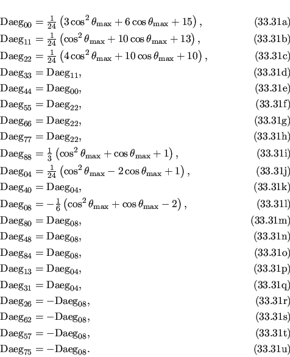

Next: Free rotor isotropic cone Up: Torsionless isotropic cone frame Previous: Torsionless isotropic cone parameterisation Contents Index
|
|
The torsionless rotation matrix is defined in equation 12.77c.
The frame order matrix is
 |
The surface normalisation factor is
|  |
The 1 degree frame order matrix with tensor rank-2 is
The 2 degree frame order matrix with tensor rank-4 consists of the following elements, using Kronecker product double indices from 0 to 8
|  |
After factorisation, the equations are
The frame order matrix element simulation script from Section 16.2, page ![[*]](crossref.png) was used to compare the implementation of equations 16.30 and 16.32 above.
Frame order matrix
Daeg(1) and
Daeg(2) values were both simulated and calculated, both within and out of the motional eigenframe.
The in-frame
Daeg(1) and
Daeg(2) values are shown in figure 16.9.
The out-of-frame
Daeg(1) and
Daeg(2) values are shown in figure 16.10.
was used to compare the implementation of equations 16.30 and 16.32 above.
Frame order matrix
Daeg(1) and
Daeg(2) values were both simulated and calculated, both within and out of the motional eigenframe.
The in-frame
Daeg(1) and
Daeg(2) values are shown in figure 16.9.
The out-of-frame
Daeg(1) and
Daeg(2) values are shown in figure 16.10.
The relax user manual (PDF), created 2016-10-28.
![\includegraphics[width=.5\textwidth]{images/frame_order_matrix/Sijkl_iso_cone_torsionless_out_of_frame_theta_x_calc.eps}](img813.png)